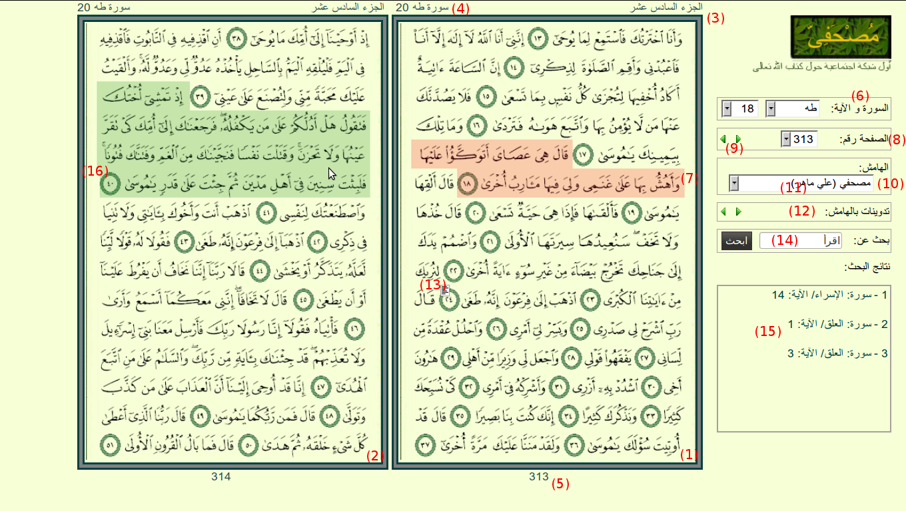
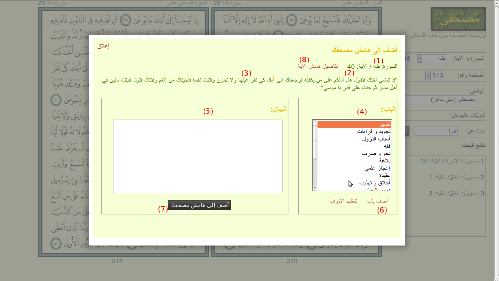

المكونات الأساسية للخدمة
تتكون الصفحة (انظر الشكل أدناه) أساسا من مصحف المدينة المنورة (الصفحة في مصحف المدينة المنورة تتكون من 15 سطرا و تنتهي برأس آية) مفتوح على صفحتين: الأولى فردية (1) و الثانية زوجية (2) تعلو كل صفحة رقم الجزء (3) و اسم السورة (4) و يكتب في أسفلها (5) رقمها من 1 إلى 604، و يوجد على يمين المصحف أدوات التحكم و هي:

السورة و الآية (6): قم بتغيير السورة أو الآية و ستنتقل فورا إلى الموضع المحدد من المصحف مع تحديد الآية باللون الأحمر (7).
الصفحة (8): قم بتغيير الصفحة ستنتقل فورا إليها مع تحديد الآية الأولى منها باللون الأحمر (7). يمكنك الانتقال إلى الصفحة التالية أو السابقة بالضغط على أسهم التقليب (9).
الهامش(10): يمكنك التعامل مع ما قمت بتدوينه في هامشك باختيار أول عنصر في هذه القائمة (11)، أما إذا أردت متابعة ما قام أحد أصدقائك بتدوينه فاختر اسمه من القائمة. لمعرفة كيفية اضافة الأصدقاء يرجى الاطلاع على خدمة المدارسة.
تدوينات بالهامش(12): استخدم أسهم التقليب للقفز إلى الآيات التي لها تدوينات بالهامش حيث تظهر الآية ذات التدوين بالهامش و عليها علامة الهامش (13).
بحث عن(14): اكتب مجموعة من الكلمات للحصول على الآيات التي تحتوي على هذه الكلمات مجتمعة (إذا أردت أن تبحث عن مجموعة من الكلمات المتتابعة بنصها فاكتبها بين علامتي تنصيص ""). لاحظ أن الكلمات لا تطابق بجذورها و لكن يتم معالجتها معالجة بسيطة كأن تبحث بكلمة بها ألف بهمزة أو بلا همزة مثل "إبراهيم" و "ابراهيم" أو بها تاء مربوطة عليها نقطتان أو ليس عليها مثل "البينة" و "البينه". نتائج البحث (15) تظهر لك الآيات التي بحثت عنها، فإذا قمت باختيار أحدها انتقلت فورا إلى الآية المطلوبة
الإضافة إلى الهامش
عند تنقلك بالمؤشر على صفحتي المصحف فإن الآية التي تقع عليها تحدد باللون الأخضر (16)، فإذا قمت بالضغط فتح لك صندوق الإضافة إلى الهامش (كما هو موضح بالشكل أدناه) و الذي يتكون من: اسم السورة (1) و رقم الآية (2) و نص الآية (3) و اختيار الباب (4) و مساحة ﻹضافة البيان (5).

اختر الباب الذي تريد إضافة البيان تحته أو أضف بابا جديدا (6) ثم اكتب البيان في المساحة (5) و اضغط "أضف إلى هامش مصحفك" (7).
تصفح الهامش و معالجة بياناته
اضغط على "تفاصيل هامش الآية" (8) (يمكنك أيضا الضغط على رمز الهامش الموجود على رقم الآية كما في (13) من الشكل السابق) لترى كل ما دونته من تدوينات في هامش هذه الآية مرتبة تحت الأبواب التي اخترتها مع إمكانية الحذف و التعديل و الطباعة و المشاركة مع الآخرين. (لمعرفة كيفية المشاركة يرجى الاطلاع على خدمة المدارسة).